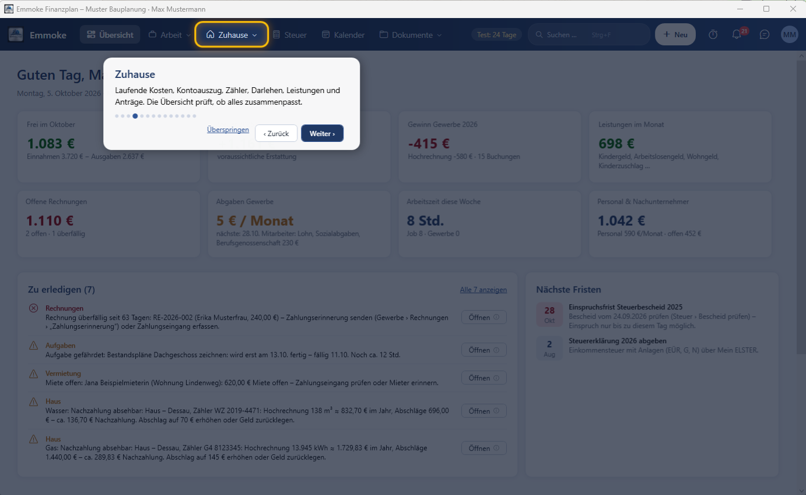
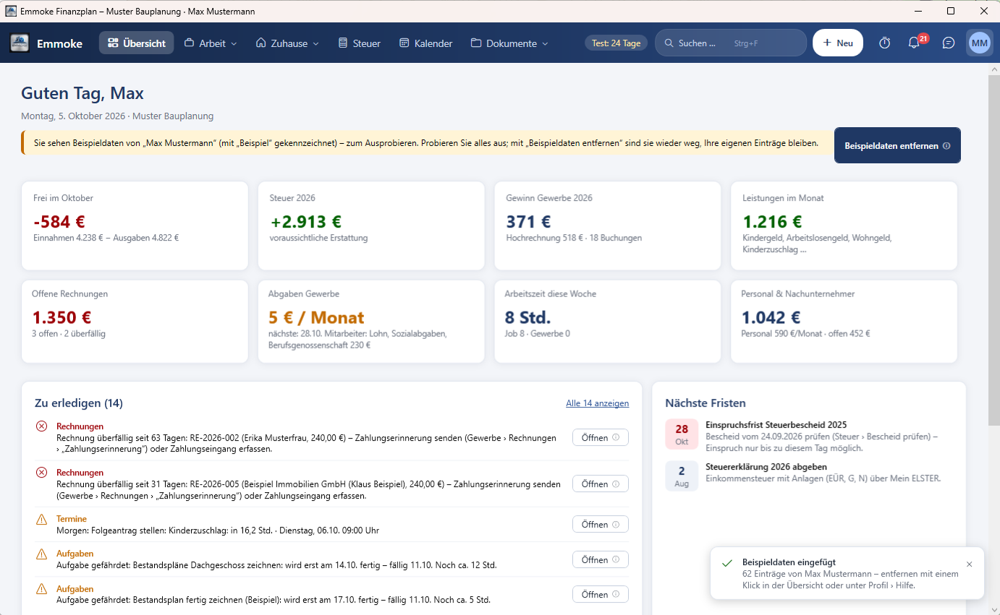
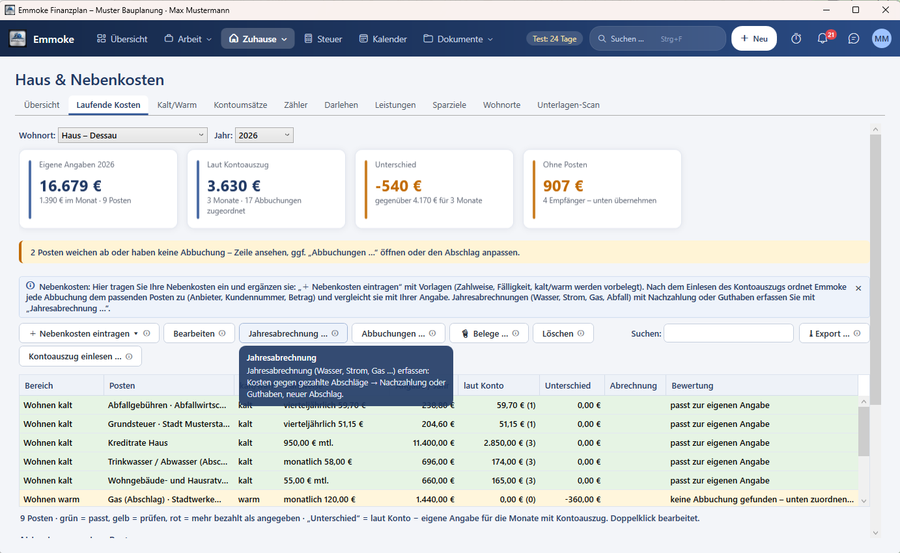

Anleitung
Emmoke Schritt für Schritt
In acht kurzen Schritten vom Herunterladen bis zur ersten Rechnung – mit Bildern. Klicken Sie links auf einen Schritt oder auf „Weiter“. Im Programm erklärt außerdem ein Rundgang beim ersten Start alles, und an jedem Knopf zeigt ein kleines i, was er tut.
1. Herunterladen und installieren
- Auf der Startseite „Für Windows herunterladen“ wählen und das Setup starten.
- Für das Handy: die Android-App herunterladen und öffnen. Die iPhone-App kommt über TestFlight bzw. den App Store, sobald Apple sie freigegeben hat.
- Beim ersten Start ein Passwort festlegen – Ihre Daten werden damit verschlüsselt. Den Wiederherstellungsschlüssel notieren und sicher aufbewahren.
2. Rundgang beim ersten Start
Emmoke zeigt Ihnen in zwei Minuten, wo was ist: Das Programm wird abgedunkelt, der erklärte Bereich leuchtet gelb auf, daneben steht, wofür er da ist. „Weiter“ geht zum nächsten Punkt, „Überspringen“ beendet den Rundgang. Jederzeit wieder: Profil › Hilfe › Rundgang starten.

3. Mit Beispieldaten von „Max Mustermann“ ausprobieren
Nach dem Rundgang bietet Emmoke Beispieldaten an: Kunden, Angebot, Rechnungen, ein Haus mit laufenden Kosten, Kontoumsätze und Termine. So sehen Sie sofort, wie alles zusammenspielt.
- Später einfügen: Profil › Hilfe › Beispieldaten einfügen (in der App: Einstellungen).
- Entfernen mit einem Klick: „Beispieldaten entfernen“ oben in der Übersicht – Ihre eigenen Einträge bleiben.

4. Jeder Knopf erklärt sich
Neben jedem Knopf steht ein kleines i. Fahren Sie mit der Maus darüber: Ein kleines, halbtransparentes Fenster erklärt, was der Knopf tut. In der App erklärt das i oben rechts die Seite und alle Knöpfe. Die Symbole lassen sich unter Profil › Hilfe ausblenden.

5. Firmendaten und erste Rechnung
- Arbeit › Gewerbe › Übersicht: Der geführte Start zeigt, was noch fehlt – jeweils mit „Jetzt erledigen“.
- Firmendaten (Anschrift, Steuernummer, Bank) eintragen – sie stehen auf jeder Rechnung.
- + Neu › Rechnung: Kunde wählen, Positionen eintragen (auch aus dem Leistungskatalog).
- Festschreiben und per E-Mail mit PDF senden. Zahlung kommt? Bezahlt – die Einnahme steht automatisch in der EÜR.
6. Zuhause: laufende Kosten und Kontoauszug
- Zuhause › Laufende Kosten: „+ Nebenkosten eintragen“ – Vorlagen für Grundsteuer, Wasser, Strom, Gas, Versicherung, Auto …
- Kontoauszug als CSV aus dem Online-Banking einlesen – Emmoke ordnet jede Abbuchung zu.
- Zuhause › Übersicht: Die Prüfung zeigt, was nicht zusammenpasst (mit Korrektur per Klick), und die Tabelle zeigt, woher jede Zahl kommt.
- Zuhause › Kosten-Check: Kalt- und Warmkosten, Diagramm „Wohin das Geld geht“, jeder Tarif bewertet (günstig, üblich, zu teuer) mit Ersparnis und „kündigen bis“ – dazu Empfehlungen und die Knöpfe „Angebote vergleichen“, „Vertrag …“ und „Kündigen …“.

7. Netto-Rechner: Was bleibt mit Job und Nebengewerbe?
Steuer › Netto-Rechner: Brutto, Steuerklasse, Kinder und Umsatz/Ausgaben des Gewerbes eintragen. Sie sehen sofort Netto aus dem Job, was das Gewerbe netto bringt, das Haushaltsnetto und wie viel Sie für Steuern zurücklegen sollten – mit einer Tabelle für andere Gewinne.

8. Handy und PC verbinden
- Am PC: Einstellungen › PC und Handy › OneDrive (oder Google Drive) als gemeinsamen Ordner wählen.
- In der App: „Mit Cloud-Datei verbinden“ › OneDrive (iPhone: Dateien-App › OneDrive oder iCloud Drive) › Ordner „Emmoke Finanzplan“ › daten.emmoke antippen › Passwort.
- Fertig: Änderungen werden automatisch abgeglichen. Der PC meldet, was am Handy geändert wurde – auch beim nächsten Öffnen.
- Die App kann alles wie das PC-Programm: Arbeit, Personal, Zuhause mit Kosten-Check, Vermietung, Steuer, Kalender, Dokumente und Assistent.

Ausführlich: Benutzerhandbuch (PDF) im Programm unter Profil › Hilfe und auf der Download-Seite.